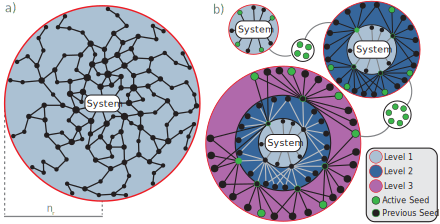

Iterative CRN Exploration
The iterative CRN exploration method (IterativeExplore) allows for CRNs to be efficiently explored by only attempting to find reactions involving kinetically viable species. In the vast majority of cases, this produces CRNs with more thoroughly sampled reactions per species than the direct exploration method (DirectExplore, demonstrated in Getting Started).

The figure above shows the main methodological differences between the direct and iterative exploration methods. In the direct method (a), as many reactions as possible are explored outwards from a starting system of species. This is done by successive iterations of stochastic mechanism generation with CDE's single-ended graph-driven sampling (SE-GDS) method. Each random mechanism is of length $n_r$, controlled within Kinetica by the radius parameter in a CDE parameter block.
CRNs are built by adding all new reactions from each mechanism to the current SpeciesData and RxData (see CRN Representation for details). Mechanism generation proceeds until a user-defined number of CDE iterations have passed without any new reactions being added to the CRN (controlled by the rxn_convergence_threshold parameter of DirectExplore).
The direct method has a number of flaws when applied to large CRNs - it is capable of simultaneously under-exploring reactions between species many reactive steps away from the starting system, and it over-explores species and reactions that may never form/occur due to the kinetics of the CRN as a whole. This is the rationale behind the iterative exploration method.
In the iterative method (b), exploration proceeds in levels. Each level consists of the following steps:
A system of species is created. CDE requires species to be input within a single XYZ file, so care must be taken to place species in Cartesian space such that they are separated (not considered to be bonded to one another).
- This is performed by optimisation of a spring-particle system that moves species' centres of mass (see Molecule System).
Reactions of species within this system are explored. This is usually set such that only adjacent reactions - those that are a single reaction away from reactants within the given species system - are explored, as this avoids the most unnecessary exploration.
- This is first done by finding all same-species reactions, both unimolecular and bimolecular, then finding all different-species reactions. This occurs in dedicated subspaces, which are then collated to form the overall level.
- Each subspace is considered to be converged in the same way as a direct method CRN - once a user-defined number of CDE iterations have passed without any new reactions being discovered (controlled by the
rxn_convergence_thresholdparameter ofIterativeExplore).
A kinetic simulation is run with the full CRN explored so far. This is done to identify species which exist at a high concentration at some point during the time period of interest, as these species are the most likely to react since they are most prevalent in the reaction mixture.
- These high concentration species are referred to as seed species within Kinetica, as they are used to grow the next level of exploration.
- Species are selected as seeds if they have a maximum concentration above the
seed_concparameter ofIterativeExplore.
The seed species are collated and the next level begins at step 1.
The iterative exploration method stops generating new levels of reactions once seed_convergence_threshold levels of exploration have passed without the seed system changing. This indicates that the remaining seeds are the high concentration species that should exist within the full CRN.
By only exploring down reactive pathways that are kinetically viable, the iterative exploration method avoids the combinatorial explosion of possible reactions that the direct method faces. This comes with the benefit of avoiding exploration of reactions that cannot occur because their reactants are never formed, speeding up kinetic simulations dramatically.
Example
From a user's perspective, running a CRN exploration with the iterative method is almost identical to running one with the direct method. The simulation conditions, parameters and calculator are all defined in the same way, but an IterativeExplore parameter block is used instead of a DirectExplore block:
crn_dir = "./my_iterative_CRN"
exploremethod = IterativeExplore(
rdir_head = crn_dir,
reac_smiles = ["C"],
rxn_convergence_threshold = 5,
seed_convergence_threshold = 3,
seed_conc = 0.05,
independent_blacklist = ["[H]"],
cde = CDE(
template_dir = "./cde_template",
radius = 1
)
)Most of the new parameters here are defined above, with exception of the independent_blacklist parameter. This defines a list of SMILES species names which should not be subjected to same-species reactions within their own subspace. The hydrogen radical is shown here as an example, as it cannot break down any more and the only reactions which consume it are the opposites of those that create it.
Setting seed_conc
The value of the seed_conc parameter is crucial in iterative explorations, effectively determining the accuracy of the resulting CRN. Set too high, very few species will ever have maximum concentrations above it and CRN levels will not contain many reactions, leading to a CRN that converges very quickly but is not sampled enough to be accurate. If seed_conc is set too low however, too many species will become seeds and individual levels will struggle to converge due to the breadth of reactions that must be sampled.
Finding the 'correct' value of seed_conc is therefore not a simple task - it is highly dependent on the species being reacted and the conditions and kinetic calculator that the simulations which guide the CRN exploration are using. We therefore recommend that multiple iterative explorations are run with decreasing values of seed_conc until an acceptable CRN accuracy has been found (i.e. the CRN is as complete as it needs to be for your use case). It can help if you have some experimental results for a related initial system under similar conditions to compare against.